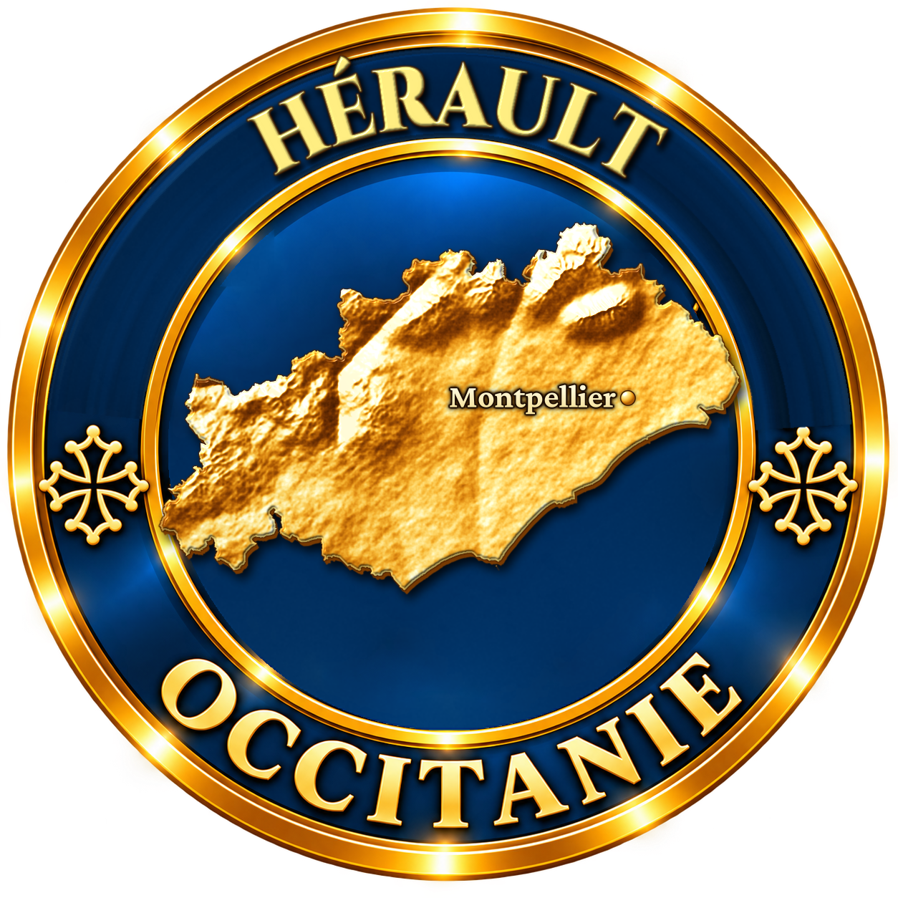
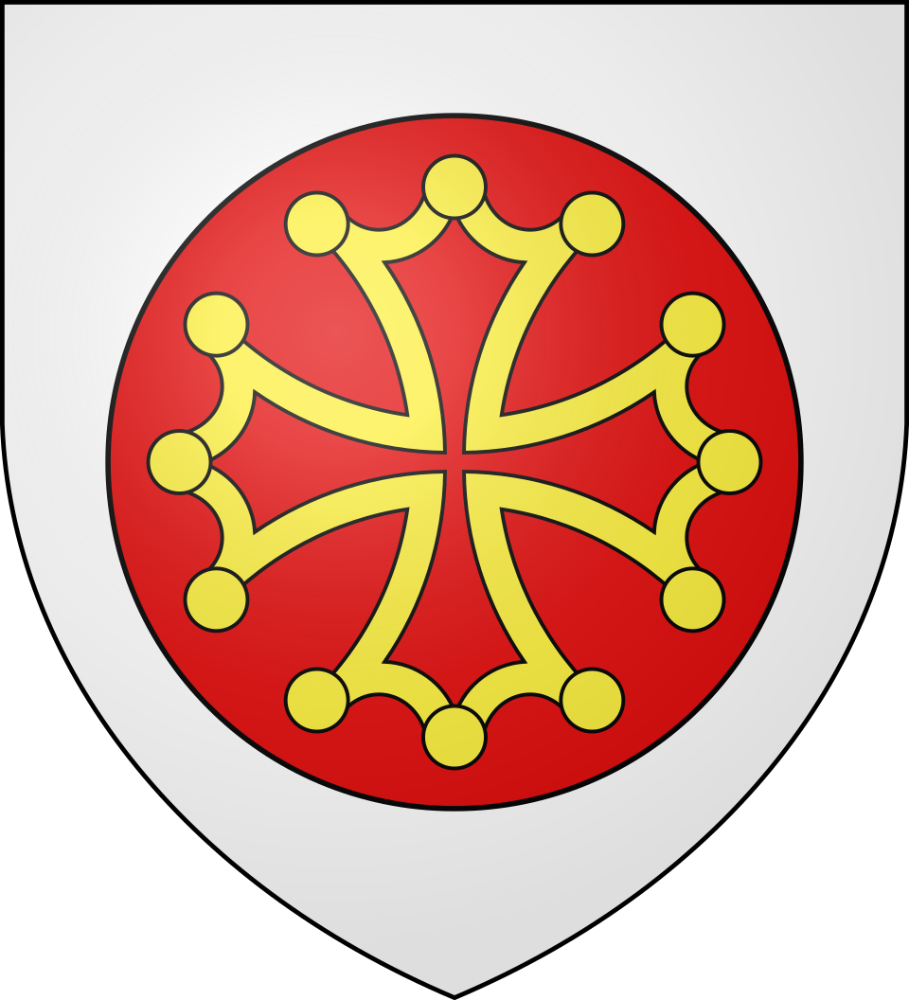
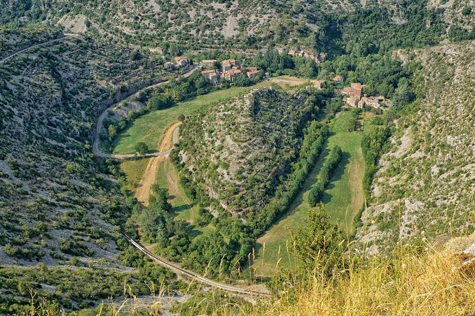
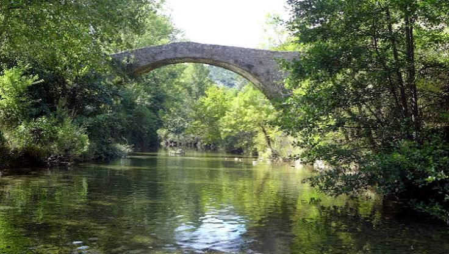

Sur le causse, rien n'annonce le gouffre. Puis le plateau s'ouvre d'un coup, et trois cents mètres plus bas apparaît un rond de prairie, une rivière qui tombe en cascade et une poignée de maisons serrées sur un rocher. Navacelles vit depuis mille ans au fond d'un méandre que la rivière a abandonné.
La Vis coule dans des gorges profondes entre deux plateaux calcaires : le causse du Larzac au sud, dans l'Hérault, et le causse de Blandas au nord, dans le Gard. À Navacelles, elle décrivait autrefois une large boucle autour d'un éperon rocheux. Il y a environ 6 000 ans, la rivière a percé le pied de cette boucle et pris le raccourci. L'ancien lit, désormais à sec, est devenu une prairie en forme de cirque, cernée de falaises. Le hameau s'est installé juste à côté du point de rupture, là où la Vis franchit le seuil par une cascade.
Cette géographie fait de Navacelles un lieu à part : le hameau est partagé entre deux communes et deux départements. Les quartiers de la rive droite (le vieux Navacelles, le Mas de Guilhou et le « Pigeonnier ») sont dans l'Hérault, sur la commune de Saint-Maurice-Navacelles. Ceux de la rive gauche, Rochebelle et la Parro, sont dans le Gard, sur la commune de Blandas.

Bien avant le hameau, des hommes ont vécu dans les grottes des falaises. Celle du Roc-du-Midi, qu'on n'atteint qu'avec une échelle de corde, a livré des traces de toutes les époques, du Néolithique à la Renaissance.
Le village naît avec les moines. Au Xe siècle, une charte de l'abbaye de Gellone, à Saint-Guilhem-le-Désert, mentionne une villa que l'on appelle couramment « Novacella », la « nouvelle cellule ». Les religieux défrichent, bâtissent un domaine autour d'un petit cloître et aménagent des terrasses de vignes, d'oliviers et d'arbres fruitiers sur les pentes. Le quartier du Mas de Guilhou devrait d'ailleurs son nom à saint Guilhem. Dès 807, la ferme de la Baume Auriol, sur le rebord du causse, figure dans le testament de Guillaume de Gellone lui-même.
À partir du XVe siècle, l'abbaye décline et ses terres passent à des seigneurs laïques. C'est à cette époque qu'un acte notarié commande un pont « bien maçonné de pierre, à chaux et sable » pour franchir la Vis : il enjambe toujours la rivière au cœur du hameau. Du cloître primitif, il ne reste aujourd'hui que l'abside d'une chapelle, dans le cimetière.
Isolé, le hameau vit presque en autarcie et en famille. En 1643, le registre des propriétés (le compoix) recense 26 propriétaires à « Novesele » : 16 d'entre eux portent le nom de Jourdan. Deux siècles plus tard, en 1845, Navacelles compte deux moulins à céréales, six truffeurs, un menuisier, un maréchal-ferrant, un cordonnier, deux tourneurs sur bois, deux chaufourniers, cinq écorceurs, un tondeur, un coiffeur, trois brodeuses sur bas et deux couturières.
L'église actuelle de l'Assomption est construite en 1875. En 1930, le hameau compte encore une centaine d'habitants et deux instituteurs qui font la classe à une trentaine d'enfants.
En 1930, une centaine d'habitants et une école de trente élèves. Aujourd'hui, une vingtaine de personnes vivent au fond du cirque toute l'année.
Comme sur tout le causse, l'exode rural vide le hameau au XXe siècle : la commune de Saint-Maurice, qui comptait 904 habitants en 1851, n'en a plus que 104 en 1968. L'école ferme, les terrasses retournent à la broussaille. Mais le paysage, lui, attire : le cirque est classé dès 1943, avec « le rocher dénudé supportant le hameau ». En 1938, le nom de Navacelles est accolé à celui de Saint-Maurice.
Les anciennes familles laissent peu à peu la place à de nouveaux habitants, dont une partie vit de l'accueil des visiteurs. Car le succès est immense, et presque trop : en été, les voitures saturent le fond du cirque. Depuis 2017, le site porte le label Grand Site de France, renouvelé fin 2024, et l'on a repensé le hameau pour qu'il reste un lieu de vie : espaces publics requalifiés, stationnement reporté sur les belvédères, navettes.

Pour rejoindre le hameau, il faut descendre en lacets depuis l'un des deux causses. Au fond, la vie se règle sur la rivière : la Vis donne l'eau, faisait tourner les moulins et rythme les jours de ses humeurs. Ses crues peuvent noyer à nouveau l'ancien méandre ; plus rarement, elle disparaît, comme en 1890, 1922, 1927 et 1961.
Aujourd'hui, Navacelles doit concilier deux vies : celle d'un hameau habité, avec ses jardins et ses troupeaux sur les causses, et celle d'un des paysages les plus visités du Languedoc.
Les habitants de Navacelles étaient surnommés les « gulars », les braillards. Il fallait bien parler fort pour se faire entendre par-dessus le bruit de la cascade.
La Vis surgit de terre à la résurgence de la Foux, cinq kilomètres en amont. Très rarement, elle se tarit : 24 heures en 1890, deux heures en 1922, huit heures en 1927, six heures en 1961.
En 1643, sur 26 propriétaires inscrits au compoix de Navacelles, 16 s'appelaient Jourdan. Dans un fond de vallée aussi isolé, on se mariait entre voisins.
En juin 2017, des funambules ont battu le record du monde de longueur en slackline sur une sangle de 1 680 mètres tendue au-dessus du cirque, entre le Gard et l'Hérault.